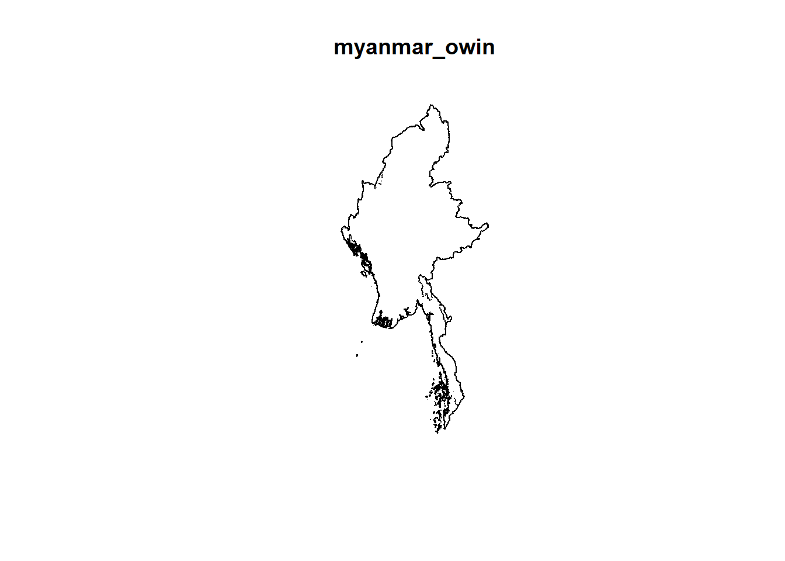
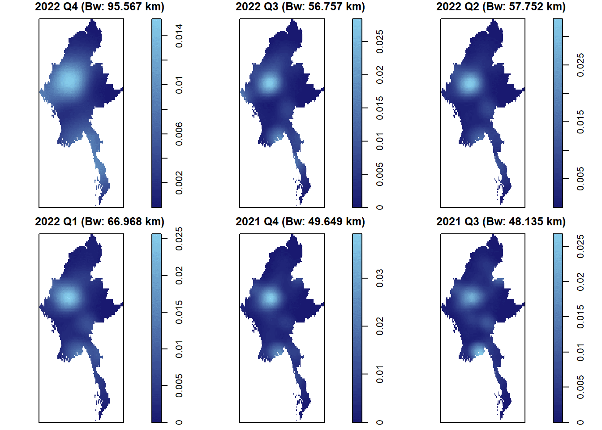
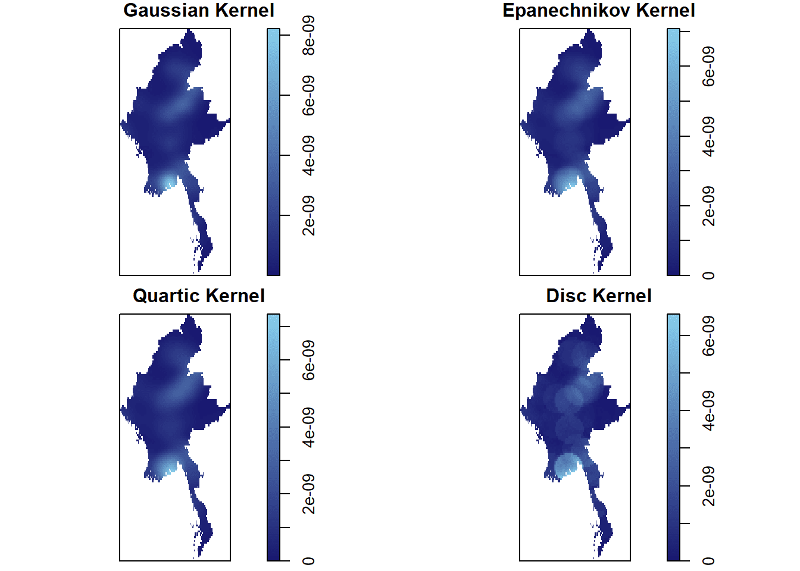

pacman::p_load(sf, raster, spatstat, tmap, tidyverse)Take-home Exercise 1
Harnessing Geospatial Analytics to Uncover Armed Conflict Patterns in Myanmar
1. Overview
1.1 Background of Myanmar’s Long-Standing Conflicts

The conflict in Myanmar is not just a result of the coup but is deeply rooted in the country’s decades-old complex ethnic and political landscape, characterised by tensions between the central government and various ethnic minority groups, each with its own armed forces. The post-coup violence has exacerbated these long-standing conflicts, leading to a severe humanitarian crisis, with thousands killed, hundreds of thousands displaced, and widespread human rights abuses reported.
1.2 Objectives of Take-home Exercise 1
As such, Geospatial analytics has become a valuable tool for evaluating and comprehending the intricacies of increasing conflicts. This exercise aims to reveal the spatial and spatio-temporal distribution of armed conflict in Myanmar by leveraging spatial point pattern analysis. Additionally, it aims to gain clearer insights into the geographical and logistical patterns of violence throughout the nation.
By the end of this take-home exercise, I aim to complete these steps in my spatial point pattern analysis in uncovering the distribution of armed conflict in Myanmar.
- Using appropriate function of sf and tidyverse packages, import and transform the downloaded armed conflict data and administrative boundary data into sf tibble data.frames.
- Using the geospatial data sets prepared, derive quarterly KDE layers.
- Using the geospatial data sets prepared, perform 2nd-Order Spatial Point Patterns Analysis.
- Using the geospatial data sets prepared, derive quarterly spatio-temporal KDE layers.
- Using the geospatial data sets prepared, perform 2nd-Order Spatio-temporal Point Patterns Analysis.
- Using appropriate tmap functions, display the KDE and Spatio-temporal KDE layers on openstreetmap of Myanmar.
- Describe the spatial patterns revealed by the KDE and Spatio-temporal KDE maps.
1.3 About the Datasets
1) Armed Conflict Data (From ACLED)
This Armed Conflict Location & Event Data (ACLED) is an independent, impartial, international non-profit organisation which owns an extensive database of violent conflict and protest in countries and territories around the world.
For the purpose of this exercise, I have downloaded ACLED’s data on Myanmar which includes a series of conflict events, particularly between 1 January 2021 to 30 June 2024.
üîó Source: ACLED
üìÅ Format: comma separated values (CSV)
As the dataset is rather extensive, I will be performing my analysis on armed conflict events in a quarterly basis to streamline my tasks. The data included in this dataset are as follows:
Event Type
ACLED categorises events into various types. I will mainly be focusing on these four event types: Battles, Explosion/Remote violence, Strategic developments, and Violence against civilians.
Event Type ACLED categorises events into various types. I will mainly be focusing on these four event types: Battles, Explosion/Remote violence, Strategic developments, and Violence against civilians.
|
Location and Geospatial Data The database provides detailed geographic information, pinpointing the exact or approximate locations of conflict events across Myanmar. This includes cities, towns, and rural areas.
|
Date and Time ACLED records the specific dates and, where possible, times of conflict events.
|
Actors
|
Fatalities
|
Others
|
2) Geospatial Data (From Myanmar Information Management Unit)
I will also be using a geospatial dataset from the Myanmar Information Management Unit (MIMU) in shapefile (.shp) format, specifically of the Myanmar state at the 2nd administrative level with district boundaries.
üîó Source: MIMU
üìÅ Format: shapefile (.shp)
My reasoning for choosing the district boundary dataset is that we do not want to select a boundary dataset that is too broad when analysing conflict events since it might not provide sufficient insights to trends where conflict events happen. Neither do we want to analyse a geography that is too divided (e.g. Admin 3) since it can be computationally inefficient as seen in the types of boundary data below.
| Admin 0 | Admin 1 | Admin 1 | Admin 2 - To Use | Admin 3 |
|---|---|---|---|---|
| National boundary | Myanmar region | Region and sub-region | District boundary | Myanmar township |
 |
 |
 |
I have donwloaded the two data sets and organised them into my folder as follows.
2. Let’s Set Up!
2.1 Importing Libraries into R
To carry out this exercise, I will be using the following R packages:
- sf: a relatively new R package specially designed to import, manage and process vector-based geospatial data in R.
- spatstat: has a wide range of useful functions for point pattern analysis. In this take-home exercise, it will be used to perform 1st- and 2nd-order spatial point patterns analysis and derive kernel density estimation (KDE) layer.
- raster: reads, writes, manipulates, analyses and model of gridded spatial data (i.e. raster). In this take-home exercise, it will be used to convert image output generate by spatstat into raster format.
- maptools: provides a set of tools for manipulating geographic data. We mainly use it to convert Spatial objects into ppp format of spatstat.
- tmap: provides functions for plotting cartographic quality static point patterns maps or interactive maps by using leaflet API.
Now, let’s install and load these packages in RStudio.
2.2 Importing Data Sets into R
1) Armed Conflicts Data
Next, I will import the downloaded armed conflict data. For aspatial datasets like this, we will import into Rstudio using read_csv() function of the readr package.
# Import armed conflict data
conflict_data <- read_csv("data/aspatial/2021-01-01-2024-06-30-Myanmar.csv")Rows: 87746 Columns: 28
── Column specification ────────────────────────────────────────────────────────
Delimiter: ","
chr (18): event_id_cnty, event_date, disorder_type, event_type, sub_event_ty...
dbl (10): year, time_precision, inter1, interaction, iso, latitude, longitud...
ℹ Use `spec()` to retrieve the full column specification for this data.
ℹ Specify the column types or set `show_col_types = FALSE` to quiet this message.
Observations
The 2021-01-01-2024-06-30-Myanmar.csv dataset contains 87746 rows and 28 columns which indicates the presence of 87746 unique armed conflict events in Myanmar.
After importing the dataset, we can inspect the dataset using the glimpse() function.
# Inspect the conflict data
glimpse(conflict_data)Rows: 87,746
Columns: 28
$ event_id_cnty <chr> "MMR64313", "MMR64313", "MMR64320", "MMR64320", "MM…
$ event_date <chr> "30 June 2024", "30 June 2024", "30 June 2024", "30…
$ year <dbl> 2024, 2024, 2024, 2024, 2024, 2024, 2024, 2024, 202…
$ time_precision <dbl> 1, 1, 1, 1, 1, 1, 1, 1, 1, 1, 1, 1, 1, 1, 1, 1, 1, …
$ disorder_type <chr> "Political violence", "Political violence", "Politi…
$ event_type <chr> "Battles", "Battles", "Battles", "Battles", "Battle…
$ sub_event_type <chr> "Armed clash", "Armed clash", "Armed clash", "Armed…
$ actor1 <chr> "People's Defense Force - Mandalay", "Military Forc…
$ assoc_actor_1 <chr> "MDA - AGF: Madaya - The Authentic Genes Force; SST…
$ inter1 <dbl> 3, 1, 3, 1, 3, 1, 1, 3, 1, 1, 1, 2, 2, 1, 1, 2, 1, …
$ interaction <dbl> 13, 13, 13, 13, 13, 13, 10, 13, 13, 10, 12, 12, 12,…
$ civilian_targeting <chr> NA, NA, NA, NA, NA, NA, NA, NA, NA, NA, NA, NA, NA,…
$ iso <dbl> 104, 104, 104, 104, 104, 104, 104, 104, 104, 104, 1…
$ region <chr> "Southeast Asia", "Southeast Asia", "Southeast Asia…
$ country <chr> "Myanmar", "Myanmar", "Myanmar", "Myanmar", "Myanma…
$ admin1 <chr> "Mandalay", "Mandalay", "Mandalay", "Mandalay", "Ma…
$ admin2 <chr> "Mandalay", "Mandalay", "Pyinoolwin", "Pyinoolwin",…
$ admin3 <chr> "Patheingyi", "Patheingyi", "Singu", "Singu", "Thab…
$ location <chr> "Aung Tha Pyay", "Aung Tha Pyay", "Pin Lel Gyi", "P…
$ latitude <dbl> 22.1504, 22.1504, 22.5752, 22.5752, 22.8800, 22.880…
$ longitude <dbl> 96.2364, 96.2364, 96.0661, 96.0661, 95.9700, 95.970…
$ geo_precision <dbl> 2, 2, 1, 1, 2, 2, 2, 2, 2, 2, 1, 1, 1, 1, 2, 2, 1, …
$ source <chr> "Democratic Voice of Burma; Irrawaddy", "Democratic…
$ source_scale <chr> "National", "National", "National", "National", "Na…
$ notes <chr> "On 30 June 2024, near Aung Tha Pyay village (Pathe…
$ fatalities <dbl> 0, 0, 0, 0, 0, 0, 0, 0, 0, 0, 0, 0, 2, 2, 0, 0, 0, …
$ tags <chr> NA, NA, NA, NA, NA, NA, NA, NA, NA, NA, NA, NA, NA,…
$ timestamp <dbl> 1720552468, 1720552468, 1720552468, 1720552468, 172…
Observations
The event_date field shows that it uses a character datatype instead of date - we will fix this later. Also, we can observe that thelongitude and langitude fields appear to be adopting the WGS84 geographic coordinate system since they are in the -180/180 and -90/90 range respectively.
2) Myanmar Boundary Data
Observations
When working with Myanmar’s boundary, we need to assign the appropriate coordinate reference system. However, since Myanmar is split into two UTM - West Myanmar (crs: 32646) and East Myanmar (crs: 32647).
Hence, I will also import the administrative boundary data into a simple features tibble data.frame using st_read() of the sf package and check the number of rows returned for both CRS 32646 and 32647. This function reads the shapefile data and returns an sf object that can be used for further analysis.
Find out conflicts count by CRS
conflict_crs <- st_as_sf(conflict_data, coords = c("longitude", "latitude"), crs = 4326)
# Count number of conflicts for CRS 32646
conflict_data_32646 <- st_transform(conflict_crs, crs = 32646)
count_32646 <- nrow(conflict_data_32646)
# Count number of conflicts for CRS 32647
conflict_data_32647 <- st_transform(conflict_crs, crs = 32647)
count_32647 <- nrow(conflict_data_32647)
crs_counts <- data.frame(
CRS = c("EPSG: 32646", "EPSG: 32647"),
Conflicts_Count = c(count_32646, count_32647)
)
print(crs_counts) CRS Conflicts_Count
1 EPSG: 32646 87746
2 EPSG: 32647 87746Since there is no difference in the count, I will decide to focus on UTM zone 47N (EPSG:32647), east of Myanmar, for the purpose of this exercise. The st_transform() function below converts the CRS of the sf object to EPSG:32647.
# Import boundary data
boundary_sf <- st_read(dsn = "data/geospatial",layer = "mmr_polbnda_adm2_250k_mimu") %>% st_transform(crs = 32647)Reading layer `mmr_polbnda_adm2_250k_mimu' from data source
`C:\SamanthaxFoo\IS415-GAA\Take-home_Ex\Take-home_Ex1\data\geospatial'
using driver `ESRI Shapefile'
Simple feature collection with 80 features and 7 fields
Geometry type: MULTIPOLYGON
Dimension: XY
Bounding box: xmin: 92.1721 ymin: 9.696844 xmax: 101.17 ymax: 28.54554
Geodetic CRS: WGS 84In the code below, we can notice that the ESPG code has been updated to 32647.
# Check for changes
st_crs(boundary_sf)Coordinate Reference System:
User input: EPSG:32647
wkt:
PROJCRS["WGS 84 / UTM zone 47N",
BASEGEOGCRS["WGS 84",
ENSEMBLE["World Geodetic System 1984 ensemble",
MEMBER["World Geodetic System 1984 (Transit)"],
MEMBER["World Geodetic System 1984 (G730)"],
MEMBER["World Geodetic System 1984 (G873)"],
MEMBER["World Geodetic System 1984 (G1150)"],
MEMBER["World Geodetic System 1984 (G1674)"],
MEMBER["World Geodetic System 1984 (G1762)"],
MEMBER["World Geodetic System 1984 (G2139)"],
ELLIPSOID["WGS 84",6378137,298.257223563,
LENGTHUNIT["metre",1]],
ENSEMBLEACCURACY[2.0]],
PRIMEM["Greenwich",0,
ANGLEUNIT["degree",0.0174532925199433]],
ID["EPSG",4326]],
CONVERSION["UTM zone 47N",
METHOD["Transverse Mercator",
ID["EPSG",9807]],
PARAMETER["Latitude of natural origin",0,
ANGLEUNIT["degree",0.0174532925199433],
ID["EPSG",8801]],
PARAMETER["Longitude of natural origin",99,
ANGLEUNIT["degree",0.0174532925199433],
ID["EPSG",8802]],
PARAMETER["Scale factor at natural origin",0.9996,
SCALEUNIT["unity",1],
ID["EPSG",8805]],
PARAMETER["False easting",500000,
LENGTHUNIT["metre",1],
ID["EPSG",8806]],
PARAMETER["False northing",0,
LENGTHUNIT["metre",1],
ID["EPSG",8807]]],
CS[Cartesian,2],
AXIS["(E)",east,
ORDER[1],
LENGTHUNIT["metre",1]],
AXIS["(N)",north,
ORDER[2],
LENGTHUNIT["metre",1]],
USAGE[
SCOPE["Navigation and medium accuracy spatial referencing."],
AREA["Between 96°E and 102°E, northern hemisphere between equator and 84°N, onshore and offshore. China. Indonesia. Laos. Malaysia - West Malaysia. Mongolia. Myanmar (Burma). Russian Federation. Thailand."],
BBOX[0,96,84,102]],
ID["EPSG",32647]]Here, I will use the plot() function which plots the geometry of the sf object. The st_geometry() function is used to extract the geometry of the mpsz_sf object which includes the districts of Myanmar as shown below.
par(mar = c(0,0,0,0))
plot(st_geometry(boundary_sf))
3. Data Wrangling
3.1 Fixing Incorrect Datatypes
Recall that the earlier inspection of the conflict_data tibble data frame revealed that the datatype indicated for event date is wrongly labelled as a character instead of a date format.
As such, let’s convert the datatype to the correct ‘date’ format as shown below.
# Convert the datatype for event_date
conflict_data$event_date <- as.Date(conflict_data$event_date, format = "%d %B %Y")
# Check for changes
head(conflict_data)# A tibble: 6 × 28
event_id_cnty event_date year time_precision disorder_type event_type
<chr> <date> <dbl> <dbl> <chr> <chr>
1 MMR64313 2024-06-30 2024 1 Political violence Battles
2 MMR64313 2024-06-30 2024 1 Political violence Battles
3 MMR64320 2024-06-30 2024 1 Political violence Battles
4 MMR64320 2024-06-30 2024 1 Political violence Battles
5 MMR64321 2024-06-30 2024 1 Political violence Battles
6 MMR64321 2024-06-30 2024 1 Political violence Battles
# ℹ 22 more variables: sub_event_type <chr>, actor1 <chr>, assoc_actor_1 <chr>,
# inter1 <dbl>, interaction <dbl>, civilian_targeting <chr>, iso <dbl>,
# region <chr>, country <chr>, admin1 <chr>, admin2 <chr>, admin3 <chr>,
# location <chr>, latitude <dbl>, longitude <dbl>, geo_precision <dbl>,
# source <chr>, source_scale <chr>, notes <chr>, fatalities <dbl>,
# tags <chr>, timestamp <dbl>3.2 Adding new year_quarter column
We will want to create a new column to indicate the specific year and quarter for each conflict event since the spatial analysis will be done later in a quarterly manner.
Extract year and quarter
conflict_data$year_quarter <- paste0(
year(conflict_data$event_date),
" Q",
quarter(conflict_data$event_date)
)
# View the new data column
unique(conflict_data$year_quarter) [1] "2024 Q2" "2024 Q1" "2023 Q4" "2023 Q3" "2023 Q2" "2023 Q1" "2022 Q4"
[8] "2022 Q3" "2022 Q2" "2022 Q1" "2021 Q4" "2021 Q3" "2021 Q2" "2021 Q1"3.3 Fixing Duplicated Event ID in conflict_data Dataframe
As shown, there are presence of duplicates in our dataframe returned by the duplicated() function.
# Check for duplicates
any(duplicated(conflict_data))[1] TRUEBased on the duplicated event ID: MMR64313 for instance. We can observe the two records are of the same political violence event happening between two actors on 30/6/2024, between the People’s Defense Force and Military Forces of Myanmar. Upon further research, these two actors are opposing political parties of Myanmar’s ongoing conflict.
# Inspect an instance of the duplciated event IDs
head(conflict_data,2)# A tibble: 2 × 29
event_id_cnty event_date year time_precision disorder_type event_type
<chr> <date> <dbl> <dbl> <chr> <chr>
1 MMR64313 2024-06-30 2024 1 Political violence Battles
2 MMR64313 2024-06-30 2024 1 Political violence Battles
# ℹ 23 more variables: sub_event_type <chr>, actor1 <chr>, assoc_actor_1 <chr>,
# inter1 <dbl>, interaction <dbl>, civilian_targeting <chr>, iso <dbl>,
# region <chr>, country <chr>, admin1 <chr>, admin2 <chr>, admin3 <chr>,
# location <chr>, latitude <dbl>, longitude <dbl>, geo_precision <dbl>,
# source <chr>, source_scale <chr>, notes <chr>, fatalities <dbl>,
# tags <chr>, timestamp <dbl>, year_quarter <chr>
Reflection
Should duplicated data be removed in this analysis?
A single event (e.g. MMR64313) can have duplicated rows with different actor1 values, typically due to counterattacks from opposing sides, leading to different data entries into the conflict_data dataset.
Hence, I will remove duplicated events found in the conflict_data dataframe as long as the rows have the same event ID indicated.
Here, I did another check to ensure there is not more than 2 possible repeated event IDs in the first 20 rows of conflict_data.
Check duplicated events for first 20 rows
duplicate_counts_first_20 <- conflict_data %>%
slice(1:20) %>%
group_by(event_id_cnty) %>%
summarize(count = n()) %>%
filter(count > 1)
# View the result
print(duplicate_counts_first_20)# A tibble: 9 × 2
event_id_cnty count
<chr> <int>
1 MMR64313 2
2 MMR64320 2
3 MMR64321 2
4 MMR64323 2
5 MMR64325 2
6 MMR64326 2
7 MMR64328 2
8 MMR64330 2
9 MMR64331 2With that checked, I’ll remove the duplicated rows with a repeated Event ID.
Remove duplicated rows
# Retrieve data of duplicated rows
merged_duplicates <- conflict_data %>%
filter(duplicated(event_id_cnty) | duplicated(event_id_cnty, fromLast = TRUE)) %>%
arrange(event_id_cnty) %>%
group_by(event_id_cnty) %>%
summarize(
actor2 = last(actor1),
assoc_actor_2 = last(assoc_actor_1)
)
conflict_data_no_duplicates <- conflict_data %>%
filter(!duplicated(event_id_cnty))
# Update conflict_data dataframe with new columns
conflict_data <- conflict_data_no_duplicates %>%
left_join(merged_duplicates, by = "event_id_cnty")
# View dataframe
print(head(conflict_data))# A tibble: 6 × 31
event_id_cnty event_date year time_precision disorder_type event_type
<chr> <date> <dbl> <dbl> <chr> <chr>
1 MMR64313 2024-06-30 2024 1 Political violence Battles
2 MMR64320 2024-06-30 2024 1 Political violence Battles
3 MMR64321 2024-06-30 2024 1 Political violence Battles
4 MMR64322 2024-06-30 2024 1 Strategic developmen… Strategic…
5 MMR64323 2024-06-30 2024 1 Political violence Battles
6 MMR64324 2024-06-30 2024 1 Strategic developmen… Strategic…
# ℹ 25 more variables: sub_event_type <chr>, actor1 <chr>, assoc_actor_1 <chr>,
# inter1 <dbl>, interaction <dbl>, civilian_targeting <chr>, iso <dbl>,
# region <chr>, country <chr>, admin1 <chr>, admin2 <chr>, admin3 <chr>,
# location <chr>, latitude <dbl>, longitude <dbl>, geo_precision <dbl>,
# source <chr>, source_scale <chr>, notes <chr>, fatalities <dbl>,
# tags <chr>, timestamp <dbl>, year_quarter <chr>, actor2 <chr>,
# assoc_actor_2 <chr>We can observe that there are no longer any duplicated event IDs in our conflict_data data frame.
any(duplicated(conflict_data))[1] FALSE3.4 Converting Aspatial Data to Simple Feature Format
For the purpose of this exercise, we will want to integrate and analyse aspatial data in a geographic context. I’ll do a check if conflict_data needs to be converted to a sf data frame - if it outputs anything else but sf, then it’s not a simple feature data frame!
class(conflict_data)[1] "spec_tbl_df" "tbl_df" "tbl" "data.frame"
Observations
We can see that conflict_data is not a sf data frame. Since a non-simple feature data frame does not have a “geometry” column, we’ll need to convert conflict_data into a simple feature data frame
We can convert conflict_data into a simple feature data frame by using st_as_sf() from the sf package. Addiitionally, we will also need to transform coordinate system from geographic (ESPG: 4326) to projected (ESPG: 32647) using st_transform().
# Convert to simple feature format
conflict_data_sf <- st_as_sf(conflict_data, coords = c("longitude", "latitude"), crs=4326) %>% st_transform(crs = 32647)
# Inspect the changes
glimpse(conflict_data_sf)Rows: 51,553
Columns: 30
$ event_id_cnty <chr> "MMR64313", "MMR64320", "MMR64321", "MMR64322", "MM…
$ event_date <date> 2024-06-30, 2024-06-30, 2024-06-30, 2024-06-30, 20…
$ year <dbl> 2024, 2024, 2024, 2024, 2024, 2024, 2024, 2024, 202…
$ time_precision <dbl> 1, 1, 1, 1, 1, 1, 1, 1, 1, 1, 1, 1, 1, 1, 1, 1, 1, …
$ disorder_type <chr> "Political violence", "Political violence", "Politi…
$ event_type <chr> "Battles", "Battles", "Battles", "Strategic develop…
$ sub_event_type <chr> "Armed clash", "Armed clash", "Armed clash", "Chang…
$ actor1 <chr> "People's Defense Force - Mandalay", "People's Defe…
$ assoc_actor_1 <chr> "MDA - AGF: Madaya - The Authentic Genes Force; SST…
$ inter1 <dbl> 3, 3, 3, 1, 3, 1, 1, 2, 1, 1, 1, 1, 3, 3, 3, 7, 1, …
$ interaction <dbl> 13, 13, 13, 10, 13, 10, 12, 12, 12, 12, 12, 13, 13,…
$ civilian_targeting <chr> NA, NA, NA, NA, NA, NA, NA, NA, NA, NA, NA, NA, NA,…
$ iso <dbl> 104, 104, 104, 104, 104, 104, 104, 104, 104, 104, 1…
$ region <chr> "Southeast Asia", "Southeast Asia", "Southeast Asia…
$ country <chr> "Myanmar", "Myanmar", "Myanmar", "Myanmar", "Myanma…
$ admin1 <chr> "Mandalay", "Mandalay", "Mandalay", "Sagaing", "Sag…
$ admin2 <chr> "Mandalay", "Pyinoolwin", "Pyinoolwin", "Shwebo", "…
$ admin3 <chr> "Patheingyi", "Singu", "Thabeikkyin", "Khin-U", "My…
$ location <chr> "Aung Tha Pyay", "Pin Lel Gyi", "Thabeikkyin", "Khi…
$ geo_precision <dbl> 2, 1, 2, 2, 2, 2, 1, 1, 2, 1, 1, 2, 1, 1, 2, 2, 1, …
$ source <chr> "Democratic Voice of Burma; Irrawaddy", "Irrawaddy"…
$ source_scale <chr> "National", "National", "National", "Subnational-Na…
$ notes <chr> "On 30 June 2024, near Aung Tha Pyay village (Pathe…
$ fatalities <dbl> 0, 0, 0, 0, 0, 0, 0, 2, 0, 0, 0, 0, 0, 0, 0, 0, 0, …
$ tags <chr> NA, NA, NA, NA, NA, NA, NA, NA, NA, NA, NA, NA, NA,…
$ timestamp <dbl> 1720552468, 1720552468, 1720552468, 1720552468, 172…
$ year_quarter <chr> "2024 Q2", "2024 Q2", "2024 Q2", "2024 Q2", "2024 Q…
$ actor2 <chr> "Military Forces of Myanmar (2021-)", "Military For…
$ assoc_actor_2 <chr> NA, NA, NA, NA, NA, NA, NA, NA, NA, NA, NA, "Uniden…
$ geometry <POINT [m]> POINT (214961 2452068), POINT (198303.2 24994…
Observations
Notice that a new column called geometry has been added into the data frame. On the other hand, the longitude and latitude columns have been removed from the data frame.
We can further inspect the newly created ‘geometry’ column of conflict_data_sf
# Retrieve geometry column
st_geometry(conflict_data_sf)Geometry set for 51553 features
Geometry type: POINT
Dimension: XY
Bounding box: xmin: -208804.4 ymin: 1103500 xmax: 640934.5 ymax: 3042960
Projected CRS: WGS 84 / UTM zone 47N
First 5 geometries:POINT (214961 2452068)POINT (198303.2 2499463)POINT (189105.4 2533434)POINT (160913.9 2522331)POINT (146213 2428487)
Observations
It consists of 51,533 features consisting of point geometric features where the underlying datum is in WGS 84 format.
To ensure that the coordinate system is correctly updated, we can use the st_crs() function where we observe that the ESPG code is correctly indicated as 32647.
# Check CRS format
st_crs(conflict_data_sf)Coordinate Reference System:
User input: EPSG:32647
wkt:
PROJCRS["WGS 84 / UTM zone 47N",
BASEGEOGCRS["WGS 84",
ENSEMBLE["World Geodetic System 1984 ensemble",
MEMBER["World Geodetic System 1984 (Transit)"],
MEMBER["World Geodetic System 1984 (G730)"],
MEMBER["World Geodetic System 1984 (G873)"],
MEMBER["World Geodetic System 1984 (G1150)"],
MEMBER["World Geodetic System 1984 (G1674)"],
MEMBER["World Geodetic System 1984 (G1762)"],
MEMBER["World Geodetic System 1984 (G2139)"],
ELLIPSOID["WGS 84",6378137,298.257223563,
LENGTHUNIT["metre",1]],
ENSEMBLEACCURACY[2.0]],
PRIMEM["Greenwich",0,
ANGLEUNIT["degree",0.0174532925199433]],
ID["EPSG",4326]],
CONVERSION["UTM zone 47N",
METHOD["Transverse Mercator",
ID["EPSG",9807]],
PARAMETER["Latitude of natural origin",0,
ANGLEUNIT["degree",0.0174532925199433],
ID["EPSG",8801]],
PARAMETER["Longitude of natural origin",99,
ANGLEUNIT["degree",0.0174532925199433],
ID["EPSG",8802]],
PARAMETER["Scale factor at natural origin",0.9996,
SCALEUNIT["unity",1],
ID["EPSG",8805]],
PARAMETER["False easting",500000,
LENGTHUNIT["metre",1],
ID["EPSG",8806]],
PARAMETER["False northing",0,
LENGTHUNIT["metre",1],
ID["EPSG",8807]]],
CS[Cartesian,2],
AXIS["(E)",east,
ORDER[1],
LENGTHUNIT["metre",1]],
AXIS["(N)",north,
ORDER[2],
LENGTHUNIT["metre",1]],
USAGE[
SCOPE["Navigation and medium accuracy spatial referencing."],
AREA["Between 96°E and 102°E, northern hemisphere between equator and 84°N, onshore and offshore. China. Indonesia. Laos. Malaysia - West Malaysia. Mongolia. Myanmar (Burma). Russian Federation. Thailand."],
BBOX[0,96,84,102]],
ID["EPSG",32647]]3.5 Reduce Data File Size
In this section, I will reduce the current Myanmar armed conflict dataset as the time taken for computing the kernel density estimates can take up to 30 minutes long which is not computationally efficient.
1) Remove ‘Protests’ and ‘Riots’ Event Types
I will remove rows in the conflicts_data_sf dataset that don’t focus on the four main event types (Battles, Explosion/Remote violence, Strategic developments, and Violence against civilians), as mentioned in the exercise brief.
conflict_data_sf <- conflict_data_sf %>%
filter(!(event_type %in% c("Protests", "Riots")))
unique(conflict_data_sf$event_type)[1] "Battles" "Strategic developments"
[3] "Violence against civilians" "Explosions/Remote violence"2) Remove unused columns in boundary_sf
As seen, there are 8 columns in the simple feature data frame of boundary_sf.
# Inspect first rows of data in boundary_sf
head(boundary_sf)Simple feature collection with 6 features and 7 fields
Geometry type: MULTIPOLYGON
Dimension: XY
Bounding box: xmin: -14915.04 ymin: 1736124 xmax: 187961.7 ymax: 2051144
Projected CRS: WGS 84 / UTM zone 47N
OBJECTID ST ST_PCODE DT DT_PCODE DT_MMR PCode_V
1 1 Ayeyarwady MMR017 Hinthada MMR017D002 ဟင်္သာတခရိုင် 9.4
2 2 Ayeyarwady MMR017 Labutta MMR017D004 လပွတ္တာခရိုင် 9.4
3 3 Ayeyarwady MMR017 Maubin MMR017D005 မအူပင်ခရိုင် 9.4
4 4 Ayeyarwady MMR017 Myaungmya MMR017D003 မြောင်းမြခရိုင် 9.4
5 5 Ayeyarwady MMR017 Pathein MMR017D001 ပုသိမ်ခရိုင် 9.4
6 6 Ayeyarwady MMR017 Pyapon MMR017D006 ဖျာပုံခရိုင် 9.4
geometry
1 MULTIPOLYGON (((90859.89 20...
2 MULTIPOLYGON (((75991.51 17...
3 MULTIPOLYGON (((115559 1928...
4 MULTIPOLYGON (((39919.39 18...
5 MULTIPOLYGON (((-6302.348 1...
6 MULTIPOLYGON (((93411.72 17...I will remove ’DT_MMR” column as we already have the District Name in English in DT and won’t require the district names in Myanmar Language. Next, we will remove the coded versions of ST (state/region) and DT (district) columns, namely ST_PCODE and DT_PCODE. Additionally, we won’t need the PCode_V column since we will be dropping the PCODE column too.
boundary_sf <- boundary_sf %>% dplyr::select('OBJECTID', 'ST', 'DT','geometry')
summary(boundary_sf) OBJECTID ST DT geometry
Min. : 1.00 Length:80 Length:80 MULTIPOLYGON :80
1st Qu.:20.75 Class :character Class :character epsg:32647 : 0
Median :40.50 Mode :character Mode :character +proj=utm ...: 0
Mean :40.50
3rd Qu.:60.25
Max. :80.00 3) Remove unused columns in conflict_data
I will also remove unnecessary columns of the conflict_data data frame that won’t be used in our spatial analysis later.
Remove unnecessary columns
conflict_data_sf <- conflict_data_sf %>%
select(event_id_cnty, event_date, year_quarter, disorder_type, event_type, location, geometry, fatalities)
summary(conflict_data_sf) event_id_cnty event_date year_quarter disorder_type
Length:42608 Min. :2021-01-01 Length:42608 Length:42608
Class :character 1st Qu.:2022-01-10 Class :character Class :character
Mode :character Median :2022-10-13 Mode :character Mode :character
Mean :2022-10-29
3rd Qu.:2023-08-29
Max. :2024-06-30
event_type location geometry fatalities
Length:42608 Length:42608 POINT :42608 Min. : 0.00
Class :character Class :character epsg:32647 : 0 1st Qu.: 0.00
Mode :character Mode :character +proj=utm ...: 0 Median : 0.00
Mean : 1.27
3rd Qu.: 1.00
Max. :201.00 Let’s append conflict_data_sf with the columns of boundary_sf to assist our analysis later.
# Link conflict event to its district region
conflict_data_sf <- st_join(conflict_data_sf, boundary_sf, join = st_intersects)3.6 Converting Simple Features Data Frame into ppp Object
It is important that we convert conflict_data_sf (a simple feature data frame) into a planer point pattern (ppp) object format, since the spatstat package that we’ll be using for the Spatial Point Pattern Analysis later is specifically designed for working with ppp-formated data. Additionally, I will begin with categorising the ppp objects into their unique year_quarter category.
Create ppp objects based on year_quarter category
# Create an empty list to store the ppp objects
ppp_list <- list()
# Loop through each unique year_quarter category
for (yq in unique(conflict_data_sf$year_quarter)) {
# Subset the data for the current year_quarter
subset_data_sf <- conflict_data_sf %>% filter(year_quarter == yq)
# Convert the subset to a ppp object
subset_ppp <- as.ppp(subset_data_sf$geometry)
# Add the ppp object to the list
ppp_list[[yq]] <- subset_ppp
}
# Check list
ppp_list$`2024 Q2`
Planar point pattern: 2788 points
window: rectangle = [-208804.4, 597543.7] x [1103500.1, 3026504.9] units
$`2024 Q1`
Planar point pattern: 3186 points
window: rectangle = [-207135, 591875.9] x [1245380, 3026504.9] units
$`2023 Q4`
Planar point pattern: 3627 points
window: rectangle = [-206931.7, 604775.1] x [1103500.1, 3020772.2] units
$`2023 Q3`
Planar point pattern: 3010 points
window: rectangle = [-197883.4, 518300.4] x [1103500.1, 3027041.8] units
$`2023 Q2`
Planar point pattern: 2745 points
window: rectangle = [-191261.5, 518300.4] x [1103500.1, 3006372.9] units
$`2023 Q1`
Planar point pattern: 3101 points
window: rectangle = [-199243.8, 591875.9] x [1103500.1, 3026504.9] units
$`2022 Q4`
Planar point pattern: 3296 points
window: rectangle = [-206531.5, 518300.4] x [1103500.1, 2931517.1] units
$`2022 Q3`
Planar point pattern: 3486 points
window: rectangle = [-206196.6, 568361.5] x [1103500.1, 3026504.9] units
$`2022 Q2`
Planar point pattern: 3580 points
window: rectangle = [-206931.7, 640934.5] x [1103500.1, 3026504.9] units
$`2022 Q1`
Planar point pattern: 3563 points
window: rectangle = [-204784, 591875.9] x [1103500.1, 3026504.9] units
$`2021 Q4`
Planar point pattern: 3844 points
window: rectangle = [-200024.3, 591875.9] x [1103500.1, 3042960.3] units
$`2021 Q3`
Planar point pattern: 2754 points
window: rectangle = [-193181.1, 591875.9] x [1103500.1, 3042960.3] units
$`2021 Q2`
Planar point pattern: 2916 points
window: rectangle = [-191409.1, 640934.5] x [1132472.1, 3042960.3] units
$`2021 Q1`
Planar point pattern: 712 points
window: rectangle = [-203795.3, 591875.9] x [1375186.1, 3026504.9] unitsWe can visualise the spread of conflict events across each quarter from January 2021 to June 2024 using the plot() function as shown below.
Visualise the spread of conflicts by year_quarter
# Ensure 'year_quarter' is a factor
conflict_data_sf$year_quarter <- as.factor(conflict_data_sf$year_quarter)
# Loop through each unique year_quarter and create separate plots
year_quarters <- unique(conflict_data_sf$year_quarter)
# Set up a grid layout for multiple plots (adjust 'mfrow' as needed)
par(mfrow = c(2,3))
par(mar = c(0,0,1,0))
# Loop through each year_quarter and plot
for (yq in year_quarters) {
subset_data_sf <- conflict_data_sf[conflict_data_sf$year_quarter == yq, ]
conflict_data_ppp <- as.ppp(subset_data_sf$geometry)
# Plot each subset ppp object
plot(conflict_data_ppp, main = paste("Year-Quarter:", yq))
}


Observations
It is noticeable that there conflict events have occured more frequently since 2021 as points plotted on the graph have gotten darker across 2021 to 2024. We can also observe the possibility of duplicated events occurring from the darker spots in the plot, in which it appears more intense in Myanmar’s central and west regions.
3.7 Creating owin object
When analysing spatial point patterns, it is a good practice to confine the analysis with a geographical area, that is Myanmar’s boundary in this case. In spatstat, an object called owin is specially designed to represent this polygonal region.
The code chunk below is used to convert the boundary_data_sf simple feature data frame into an owin object of spatstat.
# Convert to owin object
myanmar_owin <- as.owin(boundary_sf)
# Visualise the owin object
plot(myanmar_owin)
Observations
From my observations, the as.owin() function converts the boundary_data_sf spatial boundary into a window object that represents the outer boundary of the spatial region and does not handle internal structures or districts we previously saw from the plot of boundary_data_sf.
We can also take a quick look at the owin object properties as shown. I will be converting it to a data frame for the purposes of getting a quick glimpse of the object.
# Summary info of owin object
owin_df <- as.data.frame(myanmar_owin)
print(head(owin_df)) x y id sign
1 56519.39 2741919 1 -1
2 56917.28 2741947 1 -1
3 57000.15 2741973 1 -1
4 57068.51 2741994 1 -1
5 57221.44 2742142 1 -1
6 57068.51 2741994 1 -13.8 Combining ppp Object and owin Object
In this last step of geospatial data wrangling, I will mask all ppp object with the owin object I created earlier to put in place all conflict events within the boundary of Myanmar. Doing so can also optimise the memory usage for large datasets.
The ppp object outputted from combining both the point and polygon feature results in the boundary of Myanmar outlining the plot of conflict events as shown.
# Set up plotting layout
n <- length(masked_ppp_list)
# Plot each masked ppp object
par(mfrow = c(2,3), mar = c(0,0,1,0)) # Adjust margins as needed
for (quarter in names(masked_ppp_list)) {
plot(masked_ppp_list[[quarter]], main = paste("Year Quarter:", quarter))
}


4. Exploratory Data Analysis
4.1 Identifying Districts with Highest Proportion of Conflicts
It’ll also be interesting to find out specific districts with the highest concentration of armed conflicts. I will first calculate the total occurrences of conflict events per district and add the column to boundary_sf.
Count number of conflicts by districts
conflict_count <- conflict_data_sf %>%
group_by(DT) %>%
summarise(total_count_DT = n()) %>%
st_drop_geometry() %>%
select(DT, total_count_DT)
# Perform the join
boundary_sf <- boundary_sf %>%
left_join(conflict_count, by = "DT")Next, let’s calculate the proportion of total conflicts and add it as a column into the boundary_sf dataset as proportion_DT.
# Create new 'proportion_DT' column
boundary_sf <- boundary_sf %>%
mutate(proportion_DT = total_count_DT / sum(total_count_DT))
head(boundary_sf[c('DT','total_count_DT','proportion_DT')])Simple feature collection with 6 features and 3 fields
Geometry type: MULTIPOLYGON
Dimension: XY
Bounding box: xmin: -14915.04 ymin: 1736124 xmax: 187961.7 ymax: 2051144
Projected CRS: WGS 84 / UTM zone 47N
DT total_count_DT proportion_DT geometry
1 Hinthada 160 0.003755780 MULTIPOLYGON (((90859.89 20...
2 Labutta 51 0.001197155 MULTIPOLYGON (((75991.51 17...
3 Maubin 118 0.002769888 MULTIPOLYGON (((115559 1928...
4 Myaungmya 59 0.001384944 MULTIPOLYGON (((39919.39 18...
5 Pathein 333 0.007816718 MULTIPOLYGON (((-6302.348 1...
6 Pyapon 131 0.003075045 MULTIPOLYGON (((93411.72 17...At a quick glance, we can see that central and southern parts of Myanmar have the highest proportions of armed conflict events occuring.
Set up the points map
districts_choropleth <-
tm_shape(boundary_sf) +
tm_fill("proportion_DT",
n=10,
title="Proportion",
style="equal",
palette="Blues") +
tm_borders(lwd=0.2,
alpha=1) +
tm_text(text = "DT",
size = 0.2,
col = "black",
fontface = "bold") +
tm_layout(main.title = "Distribution of Conflict Points Across Districts",
legend.outside=FALSE,
main.title.size=1)# Plot the map
tmap_mode("plot")
tmap_arrange(districts_choropleth)More specifically, we can observe that the district types are all unique for the top 3 conflict areas and mainly found in the districts of Yinmarbin, Shwebo and Pakokku which lies in the central regions of Myanmar.
# Count number of conflicts by district
conflict_count <- conflict_data_sf %>%
group_by(DT) %>%
summarise(total_count_DT = n()) %>%
st_drop_geometry() %>%
select(DT, total_count_DT)
# Perform the join
boundary_sf <- boundary_sf %>%
left_join(conflict_count, by = "DT")
conflict_count %>%
arrange(desc(total_count_DT)) %>%
slice(1:10)# A tibble: 10 × 2
DT total_count_DT
<chr> <int>
1 Shwebo 2694
2 Pakokku 2491
3 Yinmarbin 1788
4 Monywa 1514
5 Kale 1261
6 Pyinoolwin 1261
7 Muse 1244
8 Loikaw 1172
9 Dawei 1165
10 Sagaing 11464.2 Identifying States with Highest Proportion of Conflicts
Instead, let us also explore the top 10 states with the highest proportions of armed conflict events.
Count number of conflicts by states
conflict_count <- conflict_data_sf %>%
group_by(ST) %>%
summarise(total_count_ST = n()) %>%
st_drop_geometry() %>%
select(ST, total_count_ST)
# Perform the join
boundary_sf <- boundary_sf %>%
left_join(conflict_count, by = "ST")Likewise, I’ll add a new column called proportion_ST to represent the proportion based on each Myanmar state.
boundary_sf <- boundary_sf %>%
mutate(proportion_ST = total_count_ST / sum(total_count_ST))
head(boundary_sf[c('ST','total_count_ST','proportion_ST')])Simple feature collection with 6 features and 3 fields
Geometry type: MULTIPOLYGON
Dimension: XY
Bounding box: xmin: -14915.04 ymin: 1736124 xmax: 187961.7 ymax: 2051144
Projected CRS: WGS 84 / UTM zone 47N
ST total_count_ST proportion_ST geometry
1 Ayeyarwady 852 0.003053731 MULTIPOLYGON (((90859.89 20...
2 Ayeyarwady 852 0.003053731 MULTIPOLYGON (((75991.51 17...
3 Ayeyarwady 852 0.003053731 MULTIPOLYGON (((115559 1928...
4 Ayeyarwady 852 0.003053731 MULTIPOLYGON (((39919.39 18...
5 Ayeyarwady 852 0.003053731 MULTIPOLYGON (((-6302.348 1...
6 Ayeyarwady 852 0.003053731 MULTIPOLYGON (((93411.72 17...At a quick glance, we can see that central and southern parts of Myanmar have the highest proportions of armed conflict events occurring, particularly in Sagaing, Mandalay and Magway states.
Create the points map
states_choropleth <-
tm_shape(boundary_sf) +
tm_fill("proportion_ST",
n=10,
title="Proportion",
style="equal",
palette="Blues") +
tm_borders(lwd=0.2,
alpha=1) +
tm_text(text = "ST",
size = 0.2,
col = "black",
fontface = "bold") +
tm_layout(main.title = "Distribution of Conflict Points Across States",
legend.outside=FALSE,
main.title.size=1)# Plot the map
tmap_mode("plot")
tmap_arrange(states_choropleth)For greater clarity, the top states with the most conflicts exist in Sagaing, Mandalay, Magway and Yangon states as indicated in the map above (darkest shade of blue).
conflict_count %>%
arrange(desc(total_count_ST)) %>%
slice(1:10)# A tibble: 10 × 2
ST total_count_ST
<chr> <int>
1 Sagaing 11128
2 Magway 4179
3 Mandalay 3603
4 Shan (North) 2938
5 Kachin 2776
6 Yangon 2608
7 Rakhine 2277
8 Tanintharyi 2240
9 Kayin 1817
10 Mon 16775. 1st Order Spatial Point Patterns Analysis
5.1 Kernel Density Estimation
5.1.1 Working with Fixed Bandwidth Methods
Using the geospatial data sets prepared, I will now perform 1st order spatial point pattern analysis by leveraging kernel density estimation (KDE) to understand the intensity of conflicts in different regions.
I will be using a variety of fixed bandwidth methods via density() of the spatstat package, to determine the most optimal method for this analysis. Namely using bw.diggle(), bw.ppl(), bw.CvL() and bw.scott().
Steps taken to calculate the KDE:
- Extract the masked ppp object for the current quarter.
- Compute the kernel density estimate by setting the
signmaparameters. - Plot the kernel density estimate using
plot()where “Bw” represents the optimal bandwidth
For the purposes of identifying the most optimal bandwidth method, I will create a ppp_obj using the 2021 Q1 conflict events first to assist my decision-making.
# Set Up
ppp_obj = masked_ppp_list$`2021 Q1`
colours <- colorRampPalette(c("midnightblue", "skyblue"))(100)1) Using bw.diggle()
The bw.diggle() bandwidth is referred to as Diggle’s cross-validation bandwidth which minimises the mean-squared error (MSE) to balance between under and over-smoothing. I will use the density() function to compute the kernel density of the masked ppp objects and visualise the distribution of conflict event points by using the plot() function.
# bw.diggle()
kde_conflict_bw_diggle <- density(ppp_obj,
sigma=bw.diggle,
edge=TRUE,
kernel="gaussian")
optimal_bw_d = floor(bw.diggle(ppp_obj)[[1]]*10)/10
plot(kde_conflict_bw_diggle, main = paste("BW: diggle", "(",optimal_bw_d,"m)"), col = colours)2) Using bw.ppl()
The second bandwidth method I attempted using is bw.ppl(), This method chooses the bandwidth that minimises the likelihood cross-validation score and improving the prediction accuracy of the kernel density estimate.
# bw.ppl()
kde_conflict_bw_ppl <- density(ppp_obj,
sigma=bw.ppl,
edge=TRUE,
kernel="gaussian")
optimal_bw_p = floor(bw.ppl(ppp_obj)[[1]]*10)/10
plot(kde_conflict_bw_ppl, main = paste("Bw: ppl", "(",optimal_bw_p,"m)"), col = colours)
Reflections
As bw.ppl() tends to choose smaller bandwidths, it provide more localised density estimates which highlights finer spatial details. As such, we can see more variability and finer details in the density distribution, with more variation between high- and low-density areas.
3) Using bw.CvL()
Thirdly, let’s explore the bandwidth method bw.CvL(), also known as Cronie and Van Lieshout cross-validation, designed to provide an optimal, adaptive bandwidth for inhomogeneous point patterns.. Similar to bw.ppl(), it aims to reduce the error measure but also aims to balance over and under-fitting based on the spatial structure of the data.
# bw.CvL()
kde_conflict_bw_CvL <- density(ppp_obj,
sigma=bw.CvL,
edge=TRUE,
kernel="gaussian")
optimal_bw_c = floor(bw.CvL(ppp_obj)[[1]]*10)/10
plot(kde_conflict_bw_CvL, main = paste("Bw: CvL (",optimal_bw_c,"m)"), col = colours)
Observations
The kernel density plot shows that CvL makes a good attempt in balancing between detail and smoothness, making it more suitable for capturing the overall density trends in spatial data with some local structures highlighted.
4) Using bw.scott()
Lastly, I will explore the bw.scott() bandwidth method. This method returns separate bandwidths for the x- and y-axes which is ideal for our spatial data that contains both x and y components. I will combine these bandwidths into a single value for isotropic kernel density estimation by taking the taking the geometric mean as shown in the value returned by sigma_combined.
# bw.scott()
bw_values <- bw.scott(ppp_obj)
sigma_x <- bw_values[1]
sigma_y <- bw_values[2]
sigma_combined <- sqrt(sigma_x * sigma_y)
kde_conflict_bw_scott <- density(ppp_obj,
sigma = sigma_combined,
edge = TRUE,
kernel = "gaussian")
optimal_bw_s = floor(sigma_combined*10)/10
plot(kde_conflict_bw_scott, main = paste("Bw: scott", "(",optimal_bw_s,"m)"), col = colours)
Observations
As shown, the geometric mean ensures equal smoothing in both x and y directions, and it largely similar to bw.Cvl(), making it a good choice for a balanced and general overview of the spatial data distribution.
Selecting a Bandwidth Method
Based on my research and observations of the charts below, the four methods cater to different types of data depending on how varied the densities are spread across and the granularity of conflict events. Additionally, I notice that bw.ppl() takes a significantly longer time to complete its KDE computations.
bw.diggle()seems effective for homogeneous data in seeing general conflict hotspots.bw.ppl()for non-homogeneous data in analysing specific locations of localised conflict zones.bw.CvL()for non-homogeneous data in capturing both localised conflicts and the broader conflict trends.bw.scott()for a fast overview and aren’t focusing on small clusters or detailed variations especially when working with large datasets.
Plot all bandwidth methods
par(mfrow = c(2,2), mar = c(0,0,1,0))
plot(kde_conflict_bw_diggle, main = paste("diggle (",optimal_bw_d,"m)"), col = colours)
plot(kde_conflict_bw_ppl, main = paste("ppl (",optimal_bw_p,"m)"), col = colours)
plot(kde_conflict_bw_CvL, main = paste("CvL (",optimal_bw_c,"m)"), col = colours)
plot(kde_conflict_bw_scott, main = paste("scott (",optimal_bw_s,"m)"), col = colours)üí° Decision: I decided to use
bw.CvL()for computing the KDE of the masked ppp objects based on each quarter. As seen above, we get a relatively smooth density estimate that isn’t too detailed likebw.ppl()and has a bandwidth of ~10,000m less thanbw.scott()which makes the density not as generalised. This bandwidth method is effective for the non-homogeneous data spread of our Myanmar conflict data and it isn’t as computationally heavy asbw.ppl().
Putting Together our Fixed KDE
Now, let us perform the KDE computation for the conflict events across all quarters using bw.CvL().
# Calculate density using bw.CvL()
par(mfrow = c(2,3), mar = c(0,0,1,0))
for (quarter in names(masked_ppp_list)) {
ppp_obj = masked_ppp_list[[quarter]]
kde_conflict_bw <- density(ppp_obj,
sigma=bw.CvL,
edge=TRUE,
kernel="gaussian")
optimal_bw = floor(bw.CvL(ppp_obj)[[1]]*10)/10
plot(kde_conflict_bw, main = paste(quarter, "(Bw:",optimal_bw,"m)"), col = colours)
}


Observations
Using a fixed KDE is beneficial for our quarterly analysis here as it ensures consistency in bandwidth across different time periods so we can focus on spatial distribution over time.
Density Values Range: The density values of the output range from 0 to 0.000000002 which can be too small to comprehend. After some research, it appears that the default unit of measurement of EPSG:32647 is in metres. As such, this causes the density values computed to be in number of points per square metre.
Bandwidth Size: A bandwidth of around 60,000 to 100,000 is considered relatively large as compared to the bandwidth returned from using bw.diggle() and bw.ppl(). Hence, this results in a smoother density estimate with less emphasis on local clusters as indicated in the generalised spatial trends.
To make the density values more comprehensible, we will re-scale the density values from metres to kilometres using rescale().
masked_ppp_list_km = list()
for (quarter in names(masked_ppp_list)) {
ppp_obj <- masked_ppp_list[[quarter]]
ppp_obj_km <- rescale(ppp_obj, 1000, "km")
masked_ppp_list_km[[quarter]] <- ppp_obj_km
}Now, we can re-run the density() function to compute the KDE map and round the numbers to their 3rd decimal place.
par(mfrow = c(2,3), mar = c(0,0,1,0))
for (quarter in names(masked_ppp_list_km)) {
ppp_obj = masked_ppp_list_km[[quarter]]
kde_conflict_bw <- density(ppp_obj,
sigma=bw.CvL,
edge=TRUE,
kernel="gaussian")
optimal_bw = floor(bw.CvL(ppp_obj)[[1]]*1000)/1000
plot(kde_conflict_bw, main = paste(quarter, "(Bw:",optimal_bw,"km)"), col = colours)
}
üí° Notice the output image looks identical to the earlier version, the only changes are in the data values from metres to kilometres (refer to the legend).
5.1.2 Working with Different Kernel Methods
Now, I will experiment with a variety of kernels for the CvL bandwidth method, specifically using the 2021 Q1 conflict data to assist me. I will be using these four kernel methods, namely gaussian, epanechniko, quartic and disc.
Observations
It is of my observation that the CvL bandwidth will automatically be defaulted to the Gaussian kernel like most KDE implementations which causes a warning message ’Bandwidth selection will be based on Gaussian kernel’. This means that only after the bandwidth is selected using the Gaussian kernel, the KDE calculation will perform using the non-gaussian kernel specified e.g. quartic / epanechniko / disc. In many cases, this still provides a reasonable estimate.
With that said, let us begin with setting up the ppp_obj taken from 2021 Q1 and run the density estimation for each kernel method to identify the most optimal for our dataset.
# Set Up
par(mfrow = c(2,2), mar = c(0,0,1,0))
ppp_obj = masked_ppp_list$`2021 Q1`
# Using the gaussian kernel
kde_conflict_g <- density(ppp_obj,
sigma=bw.CvL,
edge=TRUE,
kernel="gaussian")
plot(kde_conflict_g, main="Gaussian Kernel", col = colours)
# Using the epanechniko kernel
kde_conflict_e <- density(ppp_obj,
sigma=bw.CvL,
edge=TRUE,
kernel="epanechnikov")
plot(kde_conflict_e, main="Epanechnikov Kernel", col = colours)
# Using the quartic kernel
kde_conflict_g <- density(ppp_obj,
sigma=bw.CvL,
edge=TRUE,
kernel="quartic")
plot(kde_conflict_g, main="Quartic Kernel", col = colours)
# Using the disc kernel
kde_conflict_e <- density(ppp_obj,
sigma=bw.CvL,
edge=TRUE,
kernel="disc")
plot(kde_conflict_e, main="Disc Kernel", col = colours)
Observations
- Gaussian: provides a localised density estimate over the entire spatial extent as compared to
epanechnikovandquartic. It is good at highlighting variance and opposing ends of conflict intensities as shown by the wider range used in the legend. - Epanechnikov: It is more efficient than the
gaussianin terms of variance but produces a slightly rougher surface. It is also more localised than thequartickernel, focusing on areas near each point, with a sharper boundary at the bandwidth limit. - Quartic: Results in a good balance between smoothness and localised influence, smoother than
epanechnikovbut with similar properties. It appears suitable for moderate smoothing and sharper focus on local patterns. - Disc: results in the sharpest density estimate as compared to the other three kernels as all points within a certain distance are made to have equal influence and zero influence beyond that distance.
Decision: Hence, I will use the quartic kernel method to ensure a relatively smooth density estimate with emphasis on local points over distant ones.
As such, I run the density estimate computation using kernel = 'quartic'.
# Using 'quartic' kernel
par(mfrow = c(2,3), mar = c(0,0,1,0))
for (quarter in names(masked_ppp_list_km)) {
ppp_obj = masked_ppp_list_km[[quarter]]
kde_conflict_bw <- density(ppp_obj,
sigma=bw.CvL,
edge=TRUE,
kernel="quartic")
optimal_bw = floor(bw.CvL(ppp_obj)[[1]]*1000)/1000
plot(kde_conflict_bw, main = paste(quarter, "(Bw:",optimal_bw,"km)"), col = colours)
}
Observations
We can see high densities of armed conflict in the central and southern regions of Myanmar but more can be uncovered from conflict data. Let’s proceed to the next section.
Note
For all subsequent fixed KDE computations, I will assign sigma using the average of the CvL bandwidth returned from each quarter. Here’s the calculations based on the plots returned:
Average bandwidth size = 61.649 + 64.386 + 74.501 + 114.08 + 103.863 + 103.863 + 95.567 + 56.757 + 57.752 + 66.968 + 49.649 + 48.135 + 48.135 + 60.323) / 14 = 71.831
Let’s recompute the Fixed KDE based on the newly calculated average bandwidth such that sigma = 71.831. I’ll store the quarterly KDE outputs into a list called kde_conflict_bw_list.
# Using sigma = 71.831
par(mfrow = c(2,3), mar = c(0,0,1,0))
# Add KDE into this list
kde_conflict_bw_list <- list()
for (quarter in names(masked_ppp_list_km)) {
ppp_obj = masked_ppp_list_km[[quarter]]
kde_conflict_bw <- density(ppp_obj,
sigma=71.831,
edge=TRUE,
kernel="quartic")
optimal_bw = floor(bw.CvL(ppp_obj)[[1]]*1000)/1000
kde_conflict_bw_list[[quarter]] <- kde_conflict_bw
plot(kde_conflict_bw, main = paste(quarter, "(Bw:",optimal_bw,"km)"), col = colours)
}


5.1.3 Working with Adaptive KDE
As seen above, fixed bandwidths tend to oversmooth the mode of the distribution. On the contrary, the adaptive kernel estimate has the ability to reduce variability of estimates in areas with low density and increases it in areas with higher density (The Stata Journal, 2003).
Once again, let us use the 2021 Q1 conflict data to illustrate the difference in outputs of all three adaptive methods.
We can also compare the performance of each method based on the top 4 highest density states as highlighted earlier.
Comparing the three Adaptive KDE Types
From the outputs above, it appears that there is no major differences between the distribution of KDE values returned across the three methods, where there is high concentration of points in a specific area. Hence, we will choose to go with Adapative Kernel method.
par(mar = c(2,2,2,2),mfrow = c(3,1))
hist(vd_adaptive_kde,main = "Voronoi-Dirichlet Adaptive")
hist(adaptive_kde,main = "Adaptive Kernel")
hist(nn_kde,main = "Nearest-Neighbour Adaptive")Let’s compare the results of my two selected fixed and adaptive KDEs (E.g. Magway District)
par(mfrow = c(1,2), mar = c(0,0,1,0))
district_boundary <- as.owin(st_as_sfc(boundary_magway))
ppp_obj <- as.ppp(st_geometry(conflict_magway), W = district_boundary)
ppp_obj <- rescale(ppp_obj, 1000, "km")
kde_fixed <- density(ppp_obj, sigma=bw.CvL, edge=TRUE, kernel="quartic")
plot(kde_fixed, main = paste("Fixed KDE (CvL | quartic)"), col = colours)
kde_adaptive <- adaptive.density(ppp_obj, method="kernel")
plot(kde_adaptive, main = paste("Adaptive KDE (Kernel)"), col=colours)We can observe how adaptive kernels provides a more detailed picture of conflict spatial distribution but since it’s largely localised, conflict spots require more effort in identifying and can be computationally heavy for this exercise.
Additionally, varying bandwidth makes comparisons across regions or time periods (like quarters) more difficult because the scale of smoothing is not constant across space and time.
5.1.5 Converting Gridded KDE Output into Raster
Next, we need to convert the KDE output to KDE raster layers before it can be viewed using tmap.
Step 1) Converting KDE to Spatial Grid Data Frame
library(grid)
Attaching package: 'grid'The following object is masked from 'package:spatstat.geom':
as.maskplot_list <- list()
for (quarter in names(kde_conflict_bw_list)) {
ppp_obj <- kde_conflict_bw_list[[quarter]]
gridded_ppp_obj <- as(ppp_obj, "SpatialGridDataFrame")
plot_list[[quarter]] <- spplot(gridded_ppp_obj, main = paste(quarter), col.regions = colours)
}
library(gridExtra)
Attaching package: 'gridExtra'The following object is masked from 'package:dplyr':
combineplot_list_subset1 <- plot_list[1:6]
plot_list_subset2 <- plot_list[7:12]
plot_list_subset3 <- plot_list[13:14]
grid.newpage()
grid.arrange(grobs = plot_list_subset1, ncol = 3, nrow = 2)
grid.newpage()
grid.arrange(grobs = plot_list_subset2, ncol = 3, nrow = 2)
grid.newpage()
grid.arrange(grobs = plot_list_subset3, ncol = 3, nrow = 2)
Step 2) Rasterisation of Grid Outputs & Assigning Projection Systems
gridded_ppp_obj_raster_list <- list()
for (quarter in names(kde_conflict_bw_list)) {
gridded_ppp_obj = kde_conflict_bw_list[[quarter]]
gridded_ppp_obj_raster <- raster(gridded_ppp_obj)
projection(gridded_ppp_obj_raster) <- CRS("+init=EPSG:32647")
gridded_ppp_obj_raster_list[[quarter]] <- gridded_ppp_obj_raster
}
# Inspect for 2024 Q2
gridded_ppp_obj_raster_list$`2024 Q2`class : RasterLayer
dimensions : 128, 128, 16384 (nrow, ncol, ncell)
resolution : 7.302001, 16.30032 (x, y)
extent : -210.0086, 724.6476, 1072.026, 3158.467 (xmin, xmax, ymin, ymax)
crs : +proj=utm +zone=47 +datum=WGS84 +units=m +no_defs
source : memory
names : layer
values : 7.061861e-06, 0.01847887 (min, max)Step 3) Plot Maps
tmap_mode("plot")tmap mode set to plottingplots_by_quarter <- list()
for (quarter in names(gridded_ppp_obj_raster_list)){
gridded_ppp_obj_raster = gridded_ppp_obj_raster_list[[quarter]]
raster_plot <- tm_shape(gridded_ppp_obj_raster) +
tm_raster("layer", title="Density", palette="Blues") +
tm_layout(legend.position = c("left","bottom"),frame=FALSE, main.title = quarter,
main.title.size=1, main.title.position = "center", legend.text.size = 0.5,legend.title.size = 0.7)
plots_by_quarter[[quarter]] <- raster_plot
}
tmap_arrange(plots_by_quarter[1:14], ncol=5, nrow=3)Legend labels were too wide. The labels have been resized to 0.3, 0.3, 0.3, 0.3. Increase legend.width (argument of tm_layout) to make the legend wider and therefore the labels larger.Legend labels were too wide. The labels have been resized to 0.3, 0.3, 0.3, 0.3, 0.3. Increase legend.width (argument of tm_layout) to make the legend wider and therefore the labels larger.
Legend labels were too wide. The labels have been resized to 0.3, 0.3, 0.3, 0.3, 0.3. Increase legend.width (argument of tm_layout) to make the legend wider and therefore the labels larger.
Legend labels were too wide. The labels have been resized to 0.3, 0.3, 0.3, 0.3, 0.3. Increase legend.width (argument of tm_layout) to make the legend wider and therefore the labels larger.Legend labels were too wide. The labels have been resized to 0.3, 0.3, 0.3, 0.3. Increase legend.width (argument of tm_layout) to make the legend wider and therefore the labels larger.Legend labels were too wide. The labels have been resized to 0.3, 0.3, 0.3, 0.3, 0.3. Increase legend.width (argument of tm_layout) to make the legend wider and therefore the labels larger.
Legend labels were too wide. The labels have been resized to 0.3, 0.3, 0.3, 0.3, 0.3. Increase legend.width (argument of tm_layout) to make the legend wider and therefore the labels larger.
Legend labels were too wide. The labels have been resized to 0.3, 0.3, 0.3, 0.3, 0.3. Increase legend.width (argument of tm_layout) to make the legend wider and therefore the labels larger.Legend labels were too wide. The labels have been resized to 0.3, 0.3, 0.3, 0.3, 0.3, 0.3. Increase legend.width (argument of tm_layout) to make the legend wider and therefore the labels larger.Legend labels were too wide. The labels have been resized to 0.3, 0.3, 0.3, 0.3, 0.3. Increase legend.width (argument of tm_layout) to make the legend wider and therefore the labels larger.Legend labels were too wide. The labels have been resized to 0.3, 0.3, 0.3, 0.3, 0.3, 0.3. Increase legend.width (argument of tm_layout) to make the legend wider and therefore the labels larger.Legend labels were too wide. The labels have been resized to 0.3, 0.3, 0.3, 0.3. Increase legend.width (argument of tm_layout) to make the legend wider and therefore the labels larger.
Legend labels were too wide. The labels have been resized to 0.3, 0.3, 0.3, 0.3. Increase legend.width (argument of tm_layout) to make the legend wider and therefore the labels larger.Legend labels were too wide. The labels have been resized to 0.3, 0.3, 0.3, 0.3, 0.3, 0.3. Increase legend.width (argument of tm_layout) to make the legend wider and therefore the labels larger.
Observations
Plotting raster grid versions of KDE outputs uses discrete colour ranges which does a good job in highlighting gradual changes in conflict events across an area. Since 2021 Q2, more conflicts are seen in Southern parts of Myanmar. The density range differs for each quarter but we can see an increase in no. of armed conflicts per kilometre from 2021 Q1 to 2022 Q2, which stagnates in density and increases again in 2023 Q4.
5.2 Nearest Neighbour Analysis
Our current analyses does not reveal patterns of clustering or dispersion, to which Michael J. Crawley proposes to employ Clark-Evans test spatial randomness for its simplicity and applicability for first-order spatial analysis, which means checking for overall spatial randomness based on nearest-neighbor distances. (Crawley M. J. , 2007)
Clark-Evans Test
The test checks whether the observed point pattern of armed conflicts in Myanmar shows clustering (points are closer than expected under randomness), dispersion (points are more spread out), or randomness.
The test hypotheses are:
- Ho = The distribution of armed conflicts in Myanmar are randomly distributed.
- H1= The distribution of armed conflicts in Myanmar are not randomly distributed.
- The 95% confident interval will be used.
We will conduct the test using clarkevans.test() of statspat.
for (quarter in names(masked_ppp_list_km)) {
ppp_obj = masked_ppp_list_km[[quarter]]
print(quarter)
print(clarkevans.test(ppp_obj,
correction="none",
clipregion="boundary_sf",
alternative=c("clustered"),
nsim=99))
}[1] "2024 Q2"
Clark-Evans test
No edge correction
Z-test
data: ppp_obj
R = 0.26663, p-value < 2.2e-16
alternative hypothesis: clustered (R < 1)
[1] "2024 Q1"
Clark-Evans test
No edge correction
Z-test
data: ppp_obj
R = 0.23563, p-value < 2.2e-16
alternative hypothesis: clustered (R < 1)
[1] "2023 Q4"
Clark-Evans test
No edge correction
Z-test
data: ppp_obj
R = 0.21795, p-value < 2.2e-16
alternative hypothesis: clustered (R < 1)
[1] "2023 Q3"
Clark-Evans test
No edge correction
Z-test
data: ppp_obj
R = 0.22002, p-value < 2.2e-16
alternative hypothesis: clustered (R < 1)
[1] "2023 Q2"
Clark-Evans test
No edge correction
Z-test
data: ppp_obj
R = 0.24485, p-value < 2.2e-16
alternative hypothesis: clustered (R < 1)
[1] "2023 Q1"
Clark-Evans test
No edge correction
Z-test
data: ppp_obj
R = 0.24365, p-value < 2.2e-16
alternative hypothesis: clustered (R < 1)
[1] "2022 Q4"
Clark-Evans test
No edge correction
Z-test
data: ppp_obj
R = 0.22139, p-value < 2.2e-16
alternative hypothesis: clustered (R < 1)
[1] "2022 Q3"
Clark-Evans test
No edge correction
Z-test
data: ppp_obj
R = 0.23974, p-value < 2.2e-16
alternative hypothesis: clustered (R < 1)
[1] "2022 Q2"
Clark-Evans test
No edge correction
Z-test
data: ppp_obj
R = 0.22989, p-value < 2.2e-16
alternative hypothesis: clustered (R < 1)
[1] "2022 Q1"
Clark-Evans test
No edge correction
Z-test
data: ppp_obj
R = 0.21976, p-value < 2.2e-16
alternative hypothesis: clustered (R < 1)
[1] "2021 Q4"
Clark-Evans test
No edge correction
Z-test
data: ppp_obj
R = 0.21341, p-value < 2.2e-16
alternative hypothesis: clustered (R < 1)
[1] "2021 Q3"
Clark-Evans test
No edge correction
Z-test
data: ppp_obj
R = 0.21808, p-value < 2.2e-16
alternative hypothesis: clustered (R < 1)
[1] "2021 Q2"
Clark-Evans test
No edge correction
Z-test
data: ppp_obj
R = 0.17458, p-value < 2.2e-16
alternative hypothesis: clustered (R < 1)
[1] "2021 Q1"
Clark-Evans test
No edge correction
Z-test
data: ppp_obj
R = 0.24696, p-value < 2.2e-16
alternative hypothesis: clustered (R < 1)
Observations
For a 95% confidence level, If the p-value < 0.05, I will reject the null hypothesis of complete spatial randomness and check if data is uniform (R > 1) or clustered (R < 1).
With that said, all tests conducted across each quarter rejects the null hypothesis as p < 0.05 and spatial points are found to be clustered since R < 1.
5.3 Further Data Exploration
By using the fixed KDE with CvL bandwidth and quartic kernel, let’s see what insights can we glean from the density of conflicts in Myanmar.
5.3.1 KDE by Event Type
First, let’s identify the unique event types in this dataset.
# Check unique events
unique(conflict_data_sf$event_type)[1] "Battles" "Strategic developments"
[3] "Violence against civilians" "Explosions/Remote violence"Now, let us analyse the kernel density estimate of each unique event type found in conflict_data_sf to identify hot and cold spots across Myanmar.
Plot the KDE based on Event Type
# Set Up
par(mfrow = c(2,2), mar = c(0,0,1,0))
conflict_data_sf %>%
group_by(event_type) %>%
group_split() -> conflict_by_event_type
# Convert the sf object to owin
district_boundary <- as.owin(st_as_sfc(boundary_sf))
kde_list <- lapply(seq_along(conflict_by_event_type), function(i) {
data <- conflict_by_event_type[[i]]
event_type <- unique(data$event_type)
ppp_obj <- as.ppp(st_geometry(data), W = district_boundary)
ppp_obj <- rescale(ppp_obj, 1000, "km")
kde <- density(ppp_obj,
sigma=71.831,
edge=TRUE,
kernel="quartic")
plot(kde, main = paste(event_type), col=colours)
return(kde)
})Warning: 3 points were rejected as lying outside the specified windowWarning: data contain duplicated points
Warning: data contain duplicated pointsWarning: 1 point was rejected as lying outside the specified windowWarning: data contain duplicated pointsWarning: 3 points were rejected as lying outside the specified windowWarning: data contain duplicated points
Observations
We can almost see an equal spread of all four event types, with battles being more dominantly found in Central Myanmar, followed by strategic developments and violence against citizens.
5.3.2 KDE Across Top 4 States With Most Conflicts
Previously, we identified the top 4 states with the highest proportions of conflicts as Sagaing, Mandalay, Magway and Yangon. We can delve deeper into each state by analysing the intensity of conflicts across these states using density().
Plot the KDE of Top 4 States
# Set Up
par(mfrow = c(2,2), mar = c(0,0,1,0))
# Sagaing
district_boundary <- as.owin(st_as_sfc(boundary_sagaing))
ppp_obj <- as.ppp(st_geometry(conflict_sagaing), W = district_boundary)Warning: data contain duplicated pointsPlot the KDE of Top 4 States
ppp_obj_sagaing <- rescale(ppp_obj, 1000, "km")
kde <- density(ppp_obj_sagaing,
sigma=71.831,
edge=TRUE,
kernel="quartic")
plot(kde, main = paste("Sagaing"), col=colours)
# Mandalay
district_boundary <- as.owin(st_as_sfc(boundary_mandalay))
ppp_obj <- as.ppp(st_geometry(conflict_mandalay), W = district_boundary)Warning: data contain duplicated pointsPlot the KDE of Top 4 States
ppp_obj_mandalay <- rescale(ppp_obj, 1000, "km")
kde <- density(ppp_obj_mandalay,
sigma=71.831,
edge=TRUE,
kernel="quartic")
plot(kde, main = paste("Mandalay"), col=colours)
# Magway
district_boundary <- as.owin(st_as_sfc(boundary_magway))
ppp_obj <- as.ppp(st_geometry(conflict_magway), W = district_boundary)Warning: data contain duplicated pointsPlot the KDE of Top 4 States
ppp_obj_magway <- rescale(ppp_obj, 1000, "km")
kde <- density(ppp_obj_magway,
sigma=71.831,
edge=TRUE,
kernel="quartic")
plot(kde, main = paste("Magway"), col=colours)
# Yangon
district_boundary <- as.owin(st_as_sfc(boundary_yangon))
ppp_obj <- as.ppp(st_geometry(conflict_yangon), W = district_boundary)Warning: data contain duplicated pointsPlot the KDE of Top 4 States
ppp_obj_yangon <- rescale(ppp_obj, 1000, "km")
kde <- density(ppp_obj_yangon,
sigma=71.831,
edge=TRUE,
kernel="quartic")
plot(kde, main = paste("Yangon"), col=colours)
Observations
It’s interesting that armed conflict isn’t evenly distributed across the states though it does seem that armed conflict has inflicted the entire state of Yangon. Nonetheless, it is worth noting that Yangon is relatively smaller in size than the other three states and that will increase the density of conflict quite significantly.
5.3.3 KDE of Top 4 States by Event Type
It’ll also be interesting to breakdown each top 4 state by the event type category as shown.
Observations
The kernel density of violence against civillians is generally found to be the lowest amongst all conflict events. Additionally, all types of armed conflicts tend to occur repeatedly in the same parts of each state. E.g. conflicts regarding strategic development tend to happen in Southern part of the Sagaing state, just as it is for explosions/remote violence.
6. 2nd Order Spatial Point Patterns Analysis
Unlike 1st-order analysis, which studies the intensity of points (e.g., density), let’s also leverage 2nd-order analysis to examine how points are distributed relative to each other, which can offer deeper insights into the spatial interaction between events.
I will use the K-function and L-function is to understand the spatial relationships between events, particularly focusing on whether the points exhibit clustering, uniformity, or randomness.
6.1 Using K-Function Estimation
K-function helps detect spatial patterns by comparing the observed distribution of points against a random pattern at different distances.
6.1.1 Yinmarbin District
1) Computing K-Function Estimation
For Yinmarbin district, let’s compute K-function estimates by using Kest() of the spatstat package.
Prepare Dataset for Yinmarbin District
conflict_yinmarbin = filter(conflict_data_sf, DT == "Yinmarbin")
boundary_yinmarbin <- filter(boundary_sf, DT == "Yinmarbin")
yinmarbin_owin <- as.owin(boundary_yinmarbin)
# Create a combined ppp and owin object
ppp_obj <- as.ppp(conflict_yinmarbin$geometry)
masked_ppp <- ppp_obj[yinmarbin_owin]
yinmarbin_ppp_owin <- rescale(masked_ppp, 1000, "km")We are now ready to plot the K-function.
K_ck = Kest(yinmarbin_ppp_owin, correction = "Ripley")
plot(K_ck, . -r ~ r, ylab= "K(d)-r", xlab = "d(m)",
main = paste("Yinmarbin District (K-Function)"))
Observations
How to interpret the plot:
- K-iso represents the observed or estimated K-function value calculated from the actual data
- K-pois is the theoretical K-function that represents the expected K-function
With that said…
We can observe how the observed line (K-iso) is constantly above the theoretical line from 2021 Q2 to 2024 Q2. This confirms that conflict points in Yinmarbin are highly clustered. In fact, it is more clustered together than expected by the null hypothesis.
However, we do not have any conflict points in 2021 Q1
Note: Since I had used the default edge = TRUE settings, edge correction will account for missing neighbours outside the boundary which helps maintain an accurate estimate of the K-function.
2) Performing Complete Spatial Randomness Test
To confirm the observed spatial patterns above, a hypothesis test (i.e. Monta Carlo simulation test) will be conducted. The hypothesis and test are as follows:
- Ho = The distribution of conflict events in Myanmar are randomly distributed.
- H1= The distribution of conflict events in Myanmar are not randomly distributed.
- The null hypothesis will be rejected if p-value is smaller than alpha value of 0.001.
By using envelop(), we can get a more robust interpretation by comparing the observed K-function against a simulation envelope of K-functions generated under the null hypothesis.
Note
To achieve a 95% confidence envelope in a K-function test with Complete Spatial Randomness, I will need to exclude the upper 2.5% and lower 2.5% of the simulated K-functions., i.e. I will need to generate at least 40 simulations where nsim = 39.
# Monte Carlo test with K-function
K_ck.csr <- envelope(yinmarbin_ppp_owin, Kest,
nsim = 39, rank = 1, glocal=TRUE)Generating 39 simulations of CSR ...
1, 2,
[29:43 remaining, estimate finish 2024-09-16 19:42:45]
3,
[27:46 remaining, estimate finish 2024-09-16 19:41:32]
4,
[27:03 remaining, estimate finish 2024-09-16 19:41:35]
5,
[25:53 remaining, estimate finish 2024-09-16 19:41:09]
6,
[25:05 remaining, estimate finish 2024-09-16 19:41:06]
7,
[24:32 remaining, estimate finish 2024-09-16 19:41:21]
8,
[24:01 remaining, estimate finish 2024-09-16 19:41:39]
9,
[23:11 remaining, estimate finish 2024-09-16 19:41:36]
10,
[22:19 remaining, estimate finish 2024-09-16 19:41:27]
11,
[21:31 remaining, estimate finish 2024-09-16 19:41:25]
12,
[20:53 remaining, estimate finish 2024-09-16 19:41:37]
13,
[20:04 remaining, estimate finish 2024-09-16 19:41:32]
14,
[19:22 remaining, estimate finish 2024-09-16 19:41:40]
15,
[18:34 remaining, estimate finish 2024-09-16 19:41:37]
16,
[17:49 remaining, estimate finish 2024-09-16 19:41:40]
17,
[17:00 remaining, estimate finish 2024-09-16 19:41:35]
18,
[16:19 remaining, estimate finish 2024-09-16 19:41:44]
19,
[15:32 remaining, estimate finish 2024-09-16 19:41:44]
20,
[14:43 remaining, estimate finish 2024-09-16 19:41:39]
21,
[13:57 remaining, estimate finish 2024-09-16 19:41:40]
22,
[13:10 remaining, estimate finish 2024-09-16 19:41:39]
23,
[12:22 remaining, estimate finish 2024-09-16 19:41:36]
24,
[11:35 remaining, estimate finish 2024-09-16 19:41:34]
25,
[10:49 remaining, estimate finish 2024-09-16 19:41:35]
26,
[10:03 remaining, estimate finish 2024-09-16 19:41:37]
27, [9:17 remaining] 28, [8:31 remaining] 29, [7:44 remaining] 30, [6:57 remaining] 31, [6:15 remaining] 32, [5:32 remaining] 33, [4:46 remaining] 34, [3:59 remaining] 35, [3:12 remaining] 36, [2:26 remaining] 37, [1:39 remaining] 38, [49 sec remaining]
39.
Done.plot(K_ck.csr, main = paste("Yinmarbin District (CSR)"))
Observations
6.1.2 Shwebo District
1) Computing K-Function Estimation
For Shwebo district, let’s compute K-function estimates by using Kest() of the spatstat package.
Prepare Dataset for Shwebo District
conflict_shwebo = filter(conflict_data_sf, DT == "Shwebo")
boundary_shwebo <- filter(boundary_sf, DT == "Shwebo")
shwebo_owin <- as.owin(boundary_shwebo)
# Create a combined ppp and owin object
ppp_obj <- as.ppp(conflict_shwebo$geometry)
masked_ppp <- ppp_obj[shwebo_owin]
shwebo_ppp_owin <- rescale(masked_ppp, 1000, "km")We are now ready to plot the K-function.
K_ck = Kest(shwebo_ppp_owin, correction = "Ripley")
plot(K_ck, . -r ~ r, ylab= "K(d)-r", xlab = "d(m)",
main = paste("Shwebo District (K-Function)"))
Observations
2) Performing Complete Spatial Randomness Test
To confirm the observed spatial patterns above, a hypothesis test (i.e. Monta Carlo simulation test) will be conducted. The hypothesis and test are as follows:
- Ho = The distribution of conflict events in Myanmar are randomly distributed.
- H1= The distribution of conflict events in Myanmar are not randomly distributed.
- The null hypothesis will be rejected if p-value is smaller than alpha value of 0.001.
# Monte Carlo test with K-function
K_ck.csr <- envelope(shwebo_ppp_owin, Kest,
nsim = 39, rank = 1, glocal=TRUE)Generating 39 simulations of CSR ...
1, 2,
[2:02:05 remaining, estimate finish 2024-09-16 22:02:05]
3,
[2:05:33 remaining, estimate finish 2024-09-16 22:09:13]
4,
[2:01:07 remaining, estimate finish 2024-09-16 22:08:12]
5,
[1:56:04 remaining, estimate finish 2024-09-16 22:06:26]
6,
[1:55:29 remaining, estimate finish 2024-09-16 22:09:41]
7,
[1:59:33 remaining, estimate finish 2024-09-16 22:18:39]
8,
[1:58:01 remaining, estimate finish 2024-09-16 22:21:21]
9,
[1:52:50 remaining, estimate finish 2024-09-16 22:19:37]
10,
[1:51:44 remaining, estimate finish 2024-09-16 22:23:06]
11,
[1:48:46 remaining, estimate finish 2024-09-16 22:24:19]
12,
[1:47:49 remaining, estimate finish 2024-09-16 22:28:27]
13,
[1:43:52 remaining, estimate finish 2024-09-16 22:28:30]
14,
[1:38:23 remaining, estimate finish 2024-09-16 22:26:15]
15,
[1:33:19 remaining, estimate finish 2024-09-16 22:24:27]
16,
[1:28:26 remaining, estimate finish 2024-09-16 22:22:49]
17,
[1:23:52 remaining, estimate finish 2024-09-16 22:21:33]
18,
[1:19:50 remaining, estimate finish 2024-09-16 22:21:09]
19,
[1:15:26 remaining, estimate finish 2024-09-16 22:20:01]
20,
[1:11:13 remaining, estimate finish 2024-09-16 22:19:08]
21,
[1:07:06 remaining, estimate finish 2024-09-16 22:18:22]
22,
[1:03:09 remaining, estimate finish 2024-09-16 22:17:52]
23,
[59:12 remaining, estimate finish 2024-09-16 22:17:18]
24,
[55:18 remaining, estimate finish 2024-09-16 22:16:47]
25,
[51:20 remaining, estimate finish 2024-09-16 22:16:03]
26,
[47:30 remaining, estimate finish 2024-09-16 22:15:33]
27,
[44:13 remaining, estimate finish 2024-09-16 22:16:44]
28,
[40:37 remaining, estimate finish 2024-09-16 22:17:02]
29,
[36:47 remaining, estimate finish 2024-09-16 22:16:30]
30,
[33:04 remaining, estimate finish 2024-09-16 22:16:17]
31,
[29:16 remaining, estimate finish 2024-09-16 22:15:43]
32,
[25:32 remaining, estimate finish 2024-09-16 22:15:18]
33,
[21:50 remaining, estimate finish 2024-09-16 22:15:02]
34,
[18:07 remaining, estimate finish 2024-09-16 22:14:23]
35,
[14:26 remaining, estimate finish 2024-09-16 22:13:51]
36,
[10:46 remaining, estimate finish 2024-09-16 22:13:08]
37, [7:08 remaining] 38, [3:33 remaining]
39.
Done.plot(K_ck.csr, main = paste("Shwebo District (CSR)"))
Observations
6.2 Using L-Function Estimation
In this section, I will be computing L-function via Lest() of spatstat package which is normalises the K-function to a linear scale for easier interpretation.
6.2.1 Yinmarbin District
1) Computing L-function Estimation
L_ck = Lest(yinmarbin_ppp_owin, correction = "Ripley")
plot(L_ck, . -r ~ r, ylab= "L(d)-r", xlab = "d(m)",
main = paste("Yinmarbin District (L-Function)"))
Observations
2) Performing Complete Spatial Randomness Test
To confirm the observed spatial patterns above, a hypothesis test will be conducted. The hypothesis and test are as follows:
- Ho = The distribution of conflict events in Myanmar are randomly distributed.
- H1= The distribution of conflict events in Myanmar are not randomly distributed.
- The null hypothesis will be rejected if p-value is smaller than alpha value of 0.001.
I will also perform monta carlo simulation test using envelope() of the spatstat package.
# Monte Carlo test with L-function
L_ck.csr <- envelope(yinmarbin_ppp_owin, Lest,
nsim = 39, rank = 1, glocal=TRUE)Generating 39 simulations of CSR ...
1, 2,
[26:56 remaining, estimate finish 2024-09-16 22:43:13]
3,
[25:21 remaining, estimate finish 2024-09-16 22:42:18]
4,
[24:56 remaining, estimate finish 2024-09-16 22:42:38]
5,
[24:28 remaining, estimate finish 2024-09-16 22:42:53]
6,
[24:22 remaining, estimate finish 2024-09-16 22:43:36]
7,
[24:41 remaining, estimate finish 2024-09-16 22:44:51]
8,
[23:30 remaining, estimate finish 2024-09-16 22:44:21]
9,
[22:50 remaining, estimate finish 2024-09-16 22:44:29]
10,
[22:19 remaining, estimate finish 2024-09-16 22:44:48]
11,
[21:28 remaining, estimate finish 2024-09-16 22:44:41]
12,
[21:13 remaining, estimate finish 2024-09-16 22:45:25]
13,
[20:43 remaining, estimate finish 2024-09-16 22:45:49]
14,
[19:47 remaining, estimate finish 2024-09-16 22:45:37]
15,
[18:48 remaining, estimate finish 2024-09-16 22:45:18]
16,
[17:58 remaining, estimate finish 2024-09-16 22:45:15]
17,
[17:08 remaining, estimate finish 2024-09-16 22:45:08]
18,
[16:26 remaining, estimate finish 2024-09-16 22:45:17]
19,
[15:36 remaining, estimate finish 2024-09-16 22:45:12]
20,
[14:47 remaining, estimate finish 2024-09-16 22:45:08]
21,
[13:56 remaining, estimate finish 2024-09-16 22:44:58]
22,
[13:07 remaining, estimate finish 2024-09-16 22:44:53]
23,
[12:19 remaining, estimate finish 2024-09-16 22:44:48]
24,
[11:30 remaining, estimate finish 2024-09-16 22:44:40]
25,
[10:40 remaining, estimate finish 2024-09-16 22:44:30]
26, [9:56 remaining] 27, [9:12 remaining] 28, [8:30 remaining] 29, [7:44 remaining] 30, [6:56 remaining] 31, [6:10 remaining] 32, [5:23 remaining] 33, [4:36 remaining] 34, [3:49 remaining] 35, [3:03 remaining] 36, [2:17 remaining] 37, [1:31 remaining] 38, [45 sec remaining]
39.
Done.plot(L_ck.csr, . - r ~ r, xlab="d", ylab="L(d)-r",
main = paste("Yinmarbin District (CSR)"))
Observations
6.2.2 Shwebo District
1) Computing L-function Estimation
L_ck = Lest(shwebo_ppp_owin, correction = "Ripley")
plot(L_ck, . -r ~ r, ylab= "L(d)-r", xlab = "d(m)",
main = paste("Shwebo District (L-Function)"))
Observations
2) Performing Complete Spatial Randomness Test
To confirm the observed spatial patterns above, a hypothesis test will be conducted. The hypothesis and test are as follows:
- Ho = The distribution of conflict events in Myanmar are randomly distributed.
- H1= The distribution of conflict events in Myanmar are not randomly distributed.
- The null hypothesis will be rejected if p-value is smaller than alpha value of 0.001.
I will also perform monta carlo simulation test using envelope() of the spatstat package.
# Monte Carlo test with L-function
L_ck.csr <- envelope(shwebo_ppp_owin, Lest,
nsim = 39, rank = 1, glocal=TRUE)Generating 39 simulations of CSR ...
1, 2,
[1:48:44 remaining, estimate finish 2024-09-17 00:47:43]
3,
[1:45:47 remaining, estimate finish 2024-09-17 00:47:42]
4,
[1:44:19 remaining, estimate finish 2024-09-17 00:49:18]
5,
[1:42:10 remaining, estimate finish 2024-09-17 00:50:13]
6,
[1:39:51 remaining, estimate finish 2024-09-17 00:51:02]
7,
[1:36:04 remaining, estimate finish 2024-09-17 00:50:07]
8,
[1:32:40 remaining, estimate finish 2024-09-17 00:49:39]
9,
[1:29:28 remaining, estimate finish 2024-09-17 00:49:23]
10,
[1:26:25 remaining, estimate finish 2024-09-17 00:49:16]
11,
[1:23:13 remaining, estimate finish 2024-09-17 00:48:59]
12,
[1:19:49 remaining, estimate finish 2024-09-17 00:48:22]
13,
[1:16:41 remaining, estimate finish 2024-09-17 00:48:06]
14,
[1:13:34 remaining, estimate finish 2024-09-17 00:47:51]
15,
[1:10:30 remaining, estimate finish 2024-09-17 00:47:40]
16,
[1:07:38 remaining, estimate finish 2024-09-17 00:47:47]
17,
[1:04:40 remaining, estimate finish 2024-09-17 00:47:44]
18,
[1:01:53 remaining, estimate finish 2024-09-17 00:48:02]
19,
[59:01 remaining, estimate finish 2024-09-17 00:48:11]
20,
[56:06 remaining, estimate finish 2024-09-17 00:48:15]
21,
[53:00 remaining, estimate finish 2024-09-17 00:47:57]
22,
[50:06 remaining, estimate finish 2024-09-17 00:48:02]
23,
[47:11 remaining, estimate finish 2024-09-17 00:48:07]
24,
[44:20 remaining, estimate finish 2024-09-17 00:48:22]
25,
[41:26 remaining, estimate finish 2024-09-17 00:48:30]
26,
[38:32 remaining, estimate finish 2024-09-17 00:48:42]
27,
[35:31 remaining, estimate finish 2024-09-17 00:48:30]
28,
[32:34 remaining, estimate finish 2024-09-17 00:48:31]
29,
[29:34 remaining, estimate finish 2024-09-17 00:48:24]
30,
[26:37 remaining, estimate finish 2024-09-17 00:48:25]
31,
[23:39 remaining, estimate finish 2024-09-17 00:48:21]
32,
[20:39 remaining, estimate finish 2024-09-17 00:48:10]
33,
[17:43 remaining, estimate finish 2024-09-17 00:48:14]
34,
[14:44 remaining, estimate finish 2024-09-17 00:48:02]
35,
[11:47 remaining, estimate finish 2024-09-17 00:47:56]
36, [8:51 remaining] 37, [5:55 remaining] 38, [2:58 remaining]
39.
Done.plot(L_ck.csr, . - r ~ r, xlab="d", ylab="L(d)-r",
main = paste("Shwebo District (CSR)"))
Observations
7. Spatio-Tempmoral KDE
We focus on the continuous time
References
Crawley, M. J. (2007). The R Book. Wiley.
The Stata Journal. (2003). Adaptive kernel density estimation. Sage Journals. https://journals.sagepub.com/doi/pdf/10.1177/1536867X0300300204